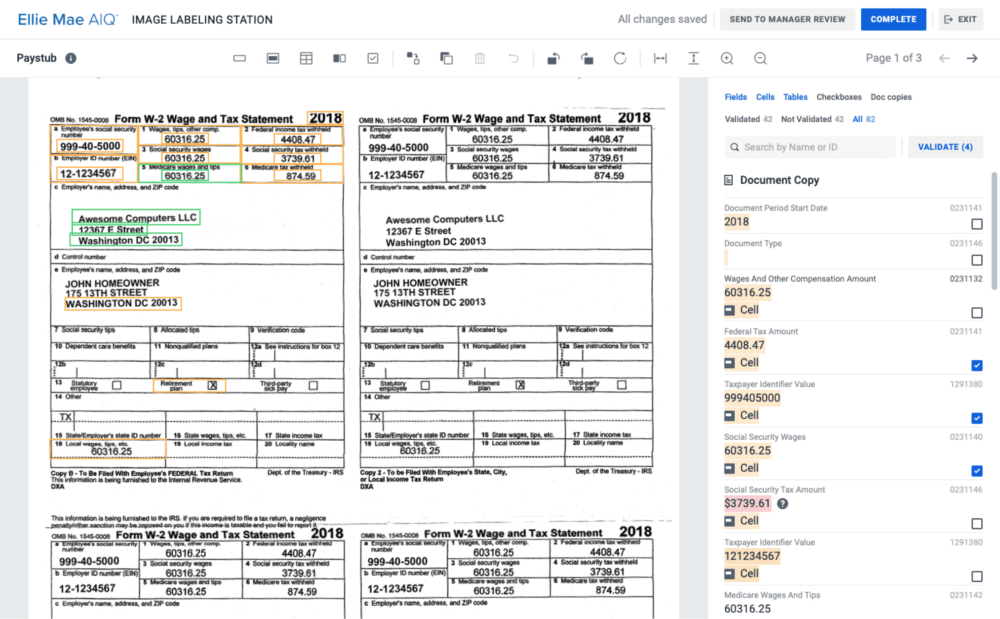
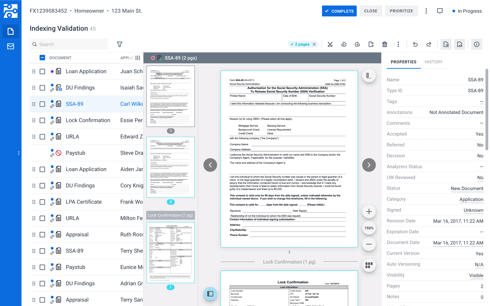
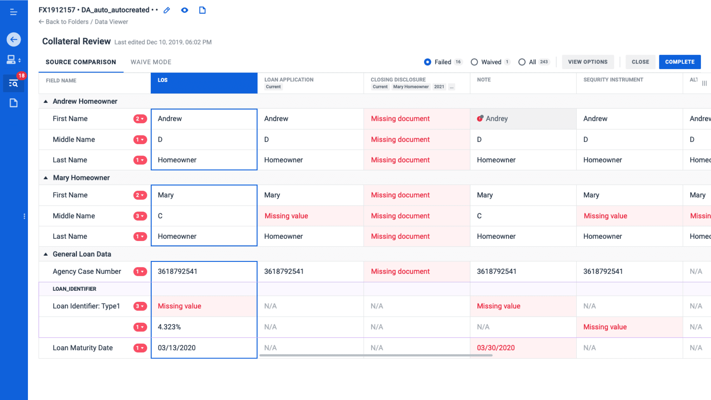

Overview
DDA is an enterprise platform that automates key processes for mortgage lenders, investors, and servicers. It uses AI to extract, validate, and audit data from loan documents, replacing hours of manual review with accurate automated workflows .
As the primary designer from day one, I shaped the experience across Web, Desktop, Admin, and the Design System, collaborating with 6 cross-functional teams over six years.
The Challenge
When I joined, DDA was mainly a Windows desktop app, powerful but outdated and hard to scale. The business needed a modern web platform to onboard clients faster, reduce training, and enable browser based deployment.
-
Feature gap. The web platform covered only ~30% of desktop functionality, blocking adoption for many clients.
-
Domain complexity. Mortgage processing involves strict regulations, dozens of document types, and zero tolerance for data errors.
-
Multiple personas. Processors, underwriters, auditors, ops managers, and internal ML engineers each had distinct needs and efficiency benchmarks.
-
Legacy design debt. The desktop UI had grown organically with no cohesive design language, making web adaptation non-trivial.
Process & Approach
My design process, developed over years of experience with various products and teams, typically follows this structure.

Discovering
Each project started with a kick-off, followed by near-daily discovery sessions with PMs, tech leads, SMEs, and sometimes client-side stakeholders. We gathered requirements, generated ideas, and I began creating first concepts to validate directly with the group.
Designing & Validating
I moved into wireframes and prototypes, holding weekly office hours with the cross-functional team to validate decisions. This continuous loop meant fewer surprises at handoff and stronger buy-in.
Developing & QA
After approval, I conducted a hand-off explaining implementation details. During development I supported engineers with adjustments and clarifications, then performed a UI review checking visual fidelity and micro-interactions.
Release & Feedback
Post-release, we gathered user feedback and fed insights back into the next iteration cycle.
Key Projects
Image Labeling Station (Built from scratch)
An internal tool for ML engineers and annotators to train the AI engine by labeling data extracted from scanned loan documents (W-2s, paystubs, tax returns).
-
Led design end to end, from research through delivery
-
Created a dual-pane interface: document viewer with multi-page navigation + structured field list with validation controls.
-
Reduced manual processing from ~50% to ~15% through automation and validation tools.
-
Improved data extraction accuracy across document types, reaching 60–100% depending on structure.

Indexing Validation (Adapted from desktop)
A document verification tool ensuring accuracy and completeness in document recognition.
-
Re-architected the desktop layout for responsive web, improving density without sacrificing clarity.
-
Introduced bulk actions for documents and pages, enabling faster processing within a single interface.
-
Worked with engineering to optimize performance for folders with 40+ documents.

Data Audit (Significantly improved)
A compliance tool comparing data across multiple sources to flag discrepancies before they become costly errors.
-
Redesigned the source comparison view with color-coded statuses and inline error badges.
-
Added Waive Mode for exceptions, giving auditors flexibility while maintaining an audit trail.
-
Integrated into Post-Closing Analyzer.

Impact
Efficiency
-
Feature coverage grew from 30% to 70%+, more than doubling parity with the desktop platform and enabling client migration.
-
Improved and adapted a dozen of applications, built new ones from scratch, including tools with no desktop equivalent.
-
Measurable efficiency gains — streamlined workflows reduced task completion times, document recognition and data extraction accuracy improved .
-
Cross-platform ownership — one of the few designers with holistic context across web, desktop, admin, and design system.
Reflection
6+ years on DDA ecosystem taught me how to balance long-term vision with delivery pressure, design for deeply specialized users without losing accessibility, and scale a design practice from a blank file to a living system used by multiple teams.
Discover Other DDA Projects
DDA Desktop Platform
Desktop version of our main product that automates tasks for lenders, investors, and servicers.

DDA Admin
Admin side allows for flexible configuration of our applications.

DDA Design system
Design System for our web projects, including DDA Web, Admin Panel, and Analyzers.